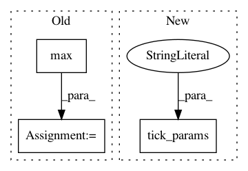

7ad4996b6106e601ed7136c11e17abbb149ef889,examples/lines_bars_and_markers/scatter_hist.py,,,#,15
Before Change
// now determine nice limits by hand:
binwidth = 0.25
xymax = max(np.max(np.abs(x)), np.max(np.abs(y)))
lim = (int(xymax/binwidth) + 1) * binwidth
axScatter.set_xlim((-lim, lim))
axScatter.set_ylim((-lim, lim))
After Change
plt.figure(figsize=(8, 8))
ax_scatter = plt.axes(rect_scatter)
ax_scatter.tick_params(direction="in", top=True, right=True)
ax_histx = plt.axes(rect_histx)
ax_histx.tick_params(direction="in", labelbottom=False)
ax_histy = plt.axes(rect_histy)
ax_histy.tick_params(direction="in", labelleft=False)
In pattern: SUPERPATTERN
Frequency: 3
Non-data size: 3
Instances
Project Name: matplotlib/matplotlib
Commit Name: 7ad4996b6106e601ed7136c11e17abbb149ef889
Time: 2019-04-27
Author: nelle.varoquaux@gmail.com
File Name: examples/lines_bars_and_markers/scatter_hist.py
Class Name:
Method Name:
Project Name: matplotlib/matplotlib
Commit Name: eaa7025a37930ddfac810721c14452548db87ebc
Time: 2019-04-26
Author: 2836374+timhoffm@users.noreply.github.com
File Name: examples/lines_bars_and_markers/scatter_hist.py
Class Name:
Method Name:
Project Name: gboeing/osmnx
Commit Name: de657707bfdd8533d456fab61cbbd3402a66ae6c
Time: 2017-01-24
Author: gboeing@berkeley.edu
File Name: osmnx/plot.py
Class Name:
Method Name: plot_graph